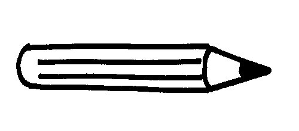

Mes passions
La lecture

- En anglais et en français
- Quelques uns de mes auteurs préférés :
- Charlotte Brontë, Emily Brontë, Anne Brontë, Fiodor Dostoievski, Léon Tolstoï, John Steinbeck, Georges Orwell, Charles Dickens, Milan Kundera, Salman Rushdie, Simone de Beauvoir, Daphné Du Maurier, Umberto Eco, Marie-Louise Von Franz, Ursula K. Le Guin, Robin Hobb, Dianna Wynne Jones, Azar Nafisi, Gabriel Garcia Marquez, Edgar Allan Poe, Noam Chomsky, Marcel Pagnol, Toni Morrison, John Irving, Paul Verlaine, Albert Camus, William Shakespeare, Nicolas Gogol, Alexandre Pouchkine, Nikita Gill, Margaret Mitchell, Donna Tartt, Chimamanda Ngozi Adichie, Arthur Rimbaud, Mary Shelley, J. R. R. Tolkien, Harper Lee, Khaled Hosseini, Jack London.
Le dessin

- Au graphite aquarellable noir
- Au feutre noir
- Parfois à l'aquarelle
Le sport
- Le jogging
- Le pilate
- Le yoga